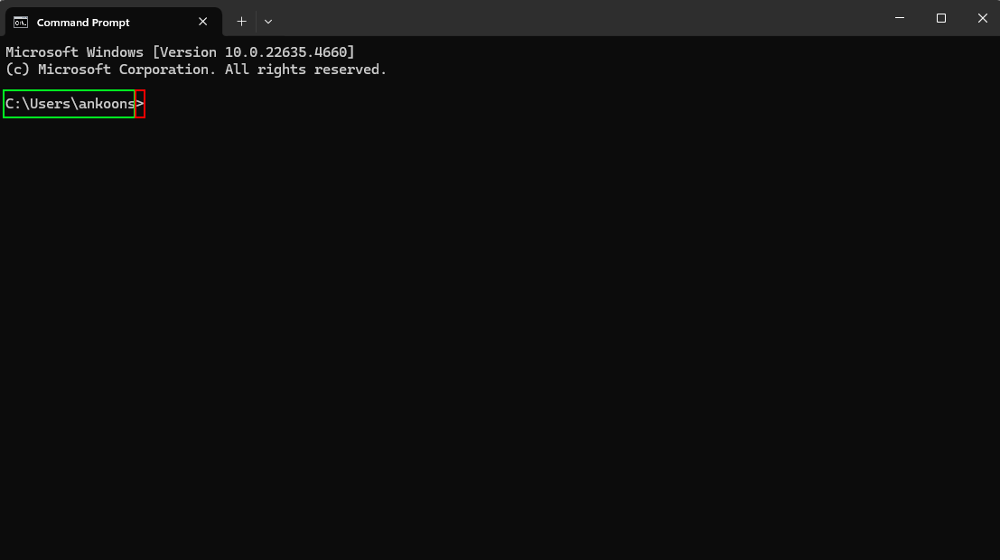
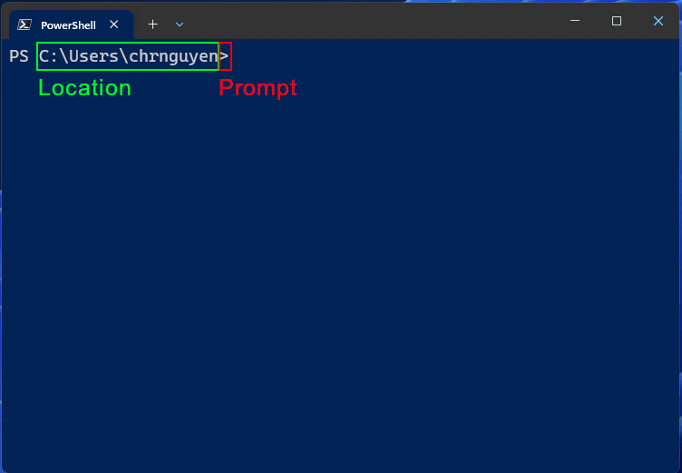
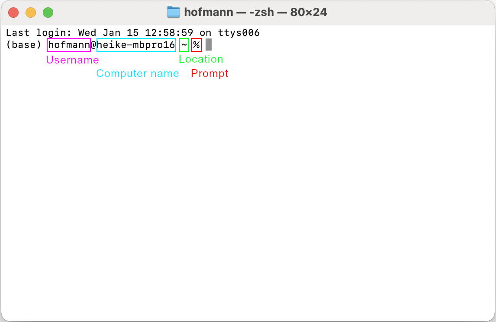
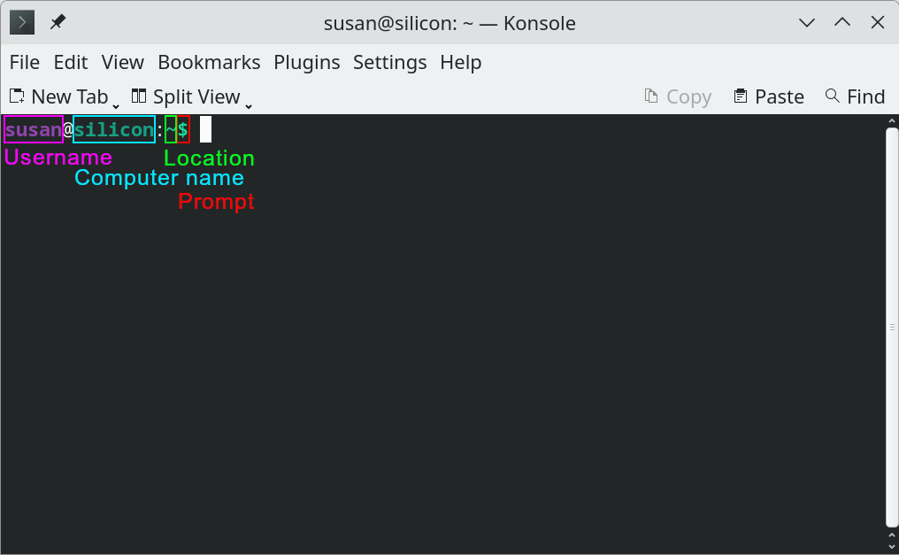
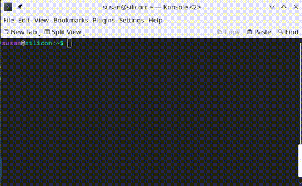
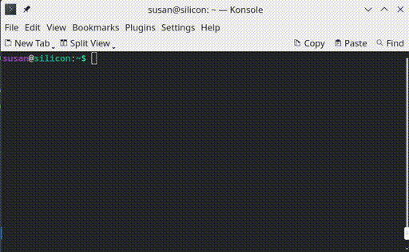
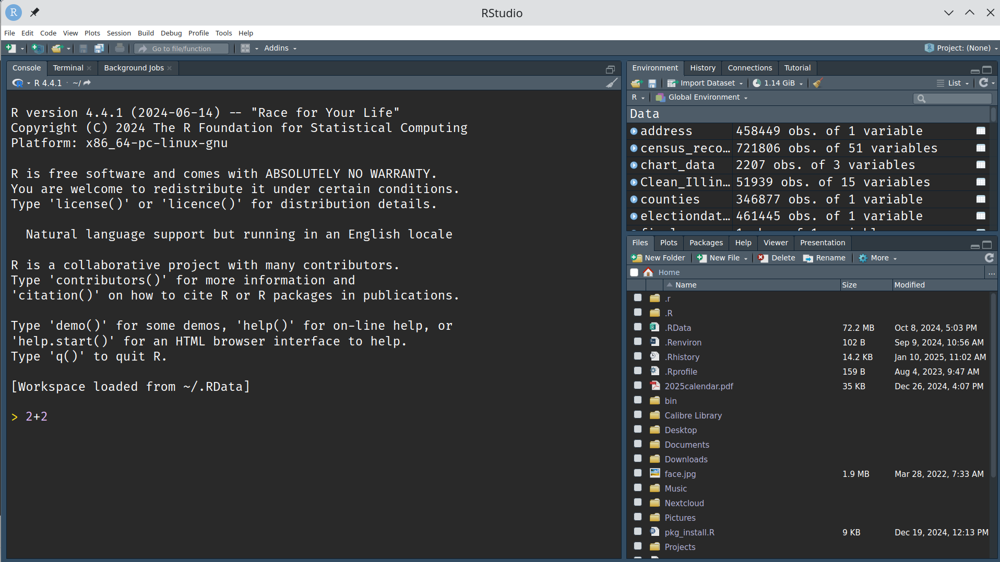
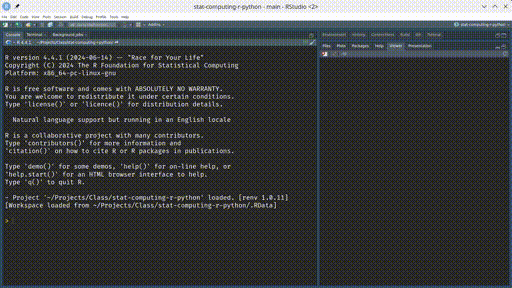
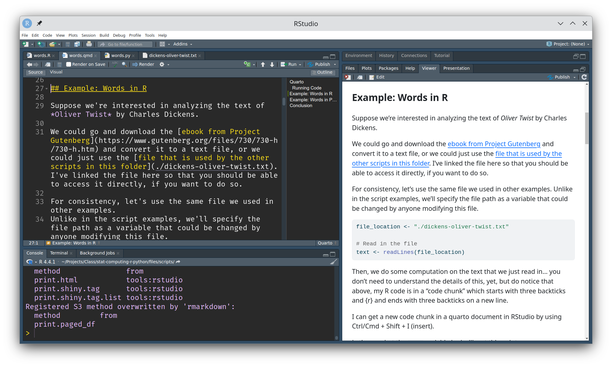

2 + 2 + 3[1] 72 + 2 # + 3[1] 4# This line is entirely commented outA better title for this chapter might be “where to put code” or “how to talk to R and Python”.
The fundamental goal of this chapter is to learn how to talk to R and Python. Before we get there, though, it’s helpful to learn a bit about how we talk to computers more generally. This will not only give you context for R and Python - it will also help you identify things that need to be done before you can complete a task.
In the very beginning, people told computers what to do using punch cards [1]. Actually, punch cards somewhat predate computers - they were used to tabulate census results long before modern machines that we would consider actual computers.
Punch cards required that you have every step of your program and data planned out in advance - you’d submit your punch cards to the computer, and then come back 24-72 hours later to find out you’d gotten two cards out of order1. Dropping a tray of punch cards was … problematic.
![Punch cards for a computer program. The red diagonal line on the top is a way to ensure the program is properly sorted. Image from Wikimedia, By ArnoldReinhold - Own work, CC BY-SA 3.0, ]](../images/tools/punch-cards-wikimedia.jpg)
Thankfully, we’re mostly free of the days where being a bit clumsy could erase a semester of hard work. As things grew more evolved, engineers developed visual displays (monitors). This enabled a new mode of interacting with computers: directly typing commands in, and receiving a response as soon as the task was completed. The primary way this interactivity happened, at least at first, was using interfaces called terminals or command prompts.
A terminal is a text interface where you give instructions to a computer that tell the computer what to do. A command prompt is another, similar, term (often used interchangeably) which refers to the character used to indicate that the computer is waiting for a command. On different systems, this character might be >>>, >, $, %, or something you can customize yourself. Most systems allow you to tinker with the configuration of the terminal - what is shown on your machine may not be similar to what is shown in the images below, but the goal of looking at multiple prompts is to help you recognize the common components across operating systems enough to make sense of your machine.
When I first learned how to use a computer, circa 1992, terminal interfaces (DOS) were the primary way you used a computer. My parents set up a custom menu that would allow me to launch computer games by typing different numbers. Windows 3.1 was an absolute revelation – we had to buy a mouse, and you could actually move things around a screen! And the screen had more than 4 colors 🌈!
Most modern computer users don’t engage with terminal interfaces very often (or at all). As you learn to program, you will become more comfortable with the terminal for completing basic tasks like moving files around, running programs, and obtaining diagnostic information. Usually, you pick up this information over time and when you’re frustrated trying to do a task some other way.
For now, it’s enough to know what a terminal is and to recognize it when you see it.
Let’s look at a terminal window for each operating system for a minute and examine the important parts.
The default terminal on Windows is cmd.exe.

>.Many people dislike cmd.exe and prefer to install PowerShell, which is a more fully featured terminal program. 


System terminals have their own languages, and they’re not consistent across operating systems. By default, terminals come with a set of commands described as Batch (Windows), Zsh (Mac), or Bash (default in most Linux systems).
The most important things to know how to do in a system terminal are:
Launch a program like python or R
Change your location/working directory (dir <path\to\folder> on Windows, cd <path/to/folder> on Linux/Mac)
There are lots of other things you can do, but those are the two big ones.
Let’s try launching R and python from a system terminal, and then see that we can get the same windows within RStudio. Keeping all of the windows you need for programming in one place is one of the most important features of an integrated development environment (IDE) like RStudio.
Open your system terminal and type R. Hit enter. You can issue commands directly to R by typing something in at the > prompt.
Try typing in 2+2 and hit enter.

Open your system terminal and type python (on some systems, like mine, you may have to type python3 instead). Hit enter. You can issue commands directly to python by typing something in at the >>> prompt.
Try typing in 2+2 and hit enter.

Open RStudio and navigate to the Console tab. You can issue commands directly to R by typing something in at the > prompt.
Try typing in 2+2 and hit enter.

>, which indicates that R is waiting for you to tell it to do something. Hitting enter will submit the command to calculate 2+2. Hopefully, you get 4.Open RStudio and navigate to the Terminal tab. This is a “system terminal” - that is, where you tell the computer what to do.
We tell the computer we want to work in python by typing in python3 or python (depending on how your computer is set up). This will launch an interactive python session (ipython).
You should get a prompt that looks like this: >>>
>> prompt at which the user has typed 2+2."> Type in 2+2 and hit enter.
Using the console interactively can be useful for quick things, like performing a simple arithmetic calculation, but imagine doing a complicated analysis that requires typing in 10, 15, or 20 commands! You’d have to re-type the same commands any time you wanted to bring up the results, which very quickly gets tedious.
At one point, I wanted to keep a record of the temperature around my house so that I could examine how my heating bill changed with the temperature and determine if an upgrade to a heat pump was cost effective. I decided to record the outside temperature every 6 hours, writing that information to a file along with the date and time. This only required a few commands, but I wasn’t willing to commit to being at the computer every 6 hours for the rest of my life, and I wanted the data to be complete.
Enter scripts.
If you need to repeat the same analysis, or even just remember what commands you used, typing each command in each time is not ideal. A script is a text file which records a series of commands so that they can be run together.
Interactive mode is useful for quick, one-off analyses, but if you need to repeat an analysis (or remember what you did), interactive mode is just awful. Once you close the program, the commands (and results) are gone. This is particularly inconvenient when you need to run the same task multiple times.
To somewhat address this issue, most computing languages allow you to provide a sequence of commands in a text file, or a script. In many languages, scripts are intended to run on their own, from start to finish. We often call this executing a script, and this is typically done from a terminal prompt.
Let’s take a minute and see how someone might call or run a script from the terminal.
Download scripts.zip and unzip the file.
Open a system terminal in the directory where you unzipped the files.
Follow the directions below exactly to ensure that you have the terminal open in the correct location.
Open the folder. Type cmd into the location bar at the top of the window and hit enter. The command prompt will open in the desired location.
Open a finder window and navigate to the folder you want to use. If you don’t have a path bar at the bottom of the finder window, choose View > Show Path Bar. Control-click the folder in the path bar and choose Open in Terminal.
Open the folder in your file browser. Select the path to the folder in the path bar and copy it to the clipboard. Launch a terminal and type cd, and then paste the copied path. Hit enter. (There may be more efficient ways to do this, but these instructions work for most window managers).
This assumes that the R binary has been added to your system path. If these instructions don’t work, please ask for help or visit office hours.
In the terminal, type Rscript words.R dickens-oliver-twist.txt
You should get some output that looks like this:
user@computer:~/scripts$ Rscript words.R dickens-oliver-twist.txt
text
the and to of a his in he was
8854 4902 4558 3767 3763 3569 2272 2224 1931 1684This assumes that the python binary has been added to your system path. If these instructions don’t work, please ask for help or visit office hours.
In the terminal, type python3 words.py and hit Enter. You will be prompted for the file name. Enter dickens-oliver-twist.txt and hit Enter again.
You should get some output that looks like this:
user@computer:~/scripts$ python3 words.py
Enter file:dickens-oliver-twist.txt
the 8854For more information about how to use system terminals, see Section 41.1.1.
Scripts, and compiled programs generated from scripts, are responsible for much of what you interact with on a computer or cell phone day-to-day. When the goal is to process a file or complete a task in exactly the same way each time, a script is the right choice for the job.
Scripts are also used interactively in some languages, like R and python, when doing data analysis. Because data analysis depends on the data, and data isn’t ever exactly the same or 100% what you expect it to be, people programming with data often use scripts and run the code in the script interactively. About 70% of my day-to-day computing is done using R or python scripts that are run interactively.
When a script is ready for “production” - that is, ready to be used without interactive human supervision, data scientists may use it that way.
But many data scientists and statisticians never move beyond using scripts interactively – and that is ok!
When you look for help online, though, it’s important to be able to distinguish between help that assumes you’re calling or executing a script (running it from the command line) and help that assumes you’re working with a script and using it interactively.
To make this even more confusing, it’s possible to run an entire script, or a chunk of a script, within RStudio. When we talk about running an entire script file within RStudio, we will often say we’re sourcing the file. This is because in R, to include a file of commands within another script, you run the command source("path/to/file.R").
The difference between sourcing, running, and executing a script is fairly nuanced and the vocabulary is often used interchangeably, which doesn’t help you as you’re learning!
If you haven’t already, download scripts.zip and unzip the file.
Open RStudio and use RStudio to complete the following tasks.
Use RStudio to open the words-noinput.R file in the scripts folder you downloaded and unzipped.
What do you notice about the appearance of the file? Is there an icon in the tab to tell you what type of file it is? Are some words in the file highlighted?
Copy the path to the scripts folder.
OS Specific Instructions: Windows, Mac, Linux
In the R Console, type in setwd("<paste path here>"), where you paste your file path from step 3 between the quotes. Hit enter.
In the words-noinput.R file, hit the “source” button in the top right. Do you get the same output that you got from running the file as a script from the terminal? Why do you think that is?
Click on the last line of the file and hit Run (or Ctrl/Cmd + Enter). Do you get the output now?
Click on the first line of the file and hit Run (or Ctrl/Cmd + Enter). This runs a single line of the file. Use this to run each line of the file in turn. What could you learn from doing this?
Use RStudio or your preferred python editor to open the words-noinput.py file in the scripts folder you downloaded and unzipped.
What do you notice about the appearance of the file? Is there an icon in the tab to tell you what type of file it is? Are some words in the file highlighted?
Copy the path to the scripts folder.
OS Specific Instructions: Windows, Mac, Linux
In the R Console, type in setwd("<paste path here>"), where you paste your file path from step 3 between the quotes. Hit enter.
In the words-noinput.py file, hit the “source” button in the top right. Do you get the same output that you got from running the file as a script from the terminal? What changes?
Click on the first line of the file and hit Run (or Ctrl/Cmd + Enter). This runs a single line of the file. Use this to run each line of the file in turn. What do you learn from doing this?
Using scripts interactively allows us to see what is happening in the code step-by-step, and to examine the results during the program’s evaluation. This can be beneficial when applying a script to a new dataset, because it allows us to change things on the fly while still keeping the same basic order of operations.
You can run single lines of code within a script file by clicking on the line and using the “Run” button in RStudio, or by typing Ctrl/Cmd + Enter, which will run the selected line(s) of code in the Console.
One problem with scripts and interactive modes of using programming languages is that we’re spending most of our time writing code for computers to read – which doesn’t necessarily imply that our code is easy for humans to read. As you become more proficient at programming, you will realize quickly that writing readable code is more challenging than writing working code. It is hard to remember what a specific block of code did when you come back to it months after you wrote it!
There are two solutions to this problem, and I encourage you to make liberal use of both of them (together).
A comment is a part of computer code which is intended only for people to read. It is not evaluated or run by the computing language.
To “comment out” a single line of code in R or python, put a # (pound sign/hashtag) just before the part of the code you do not want to be evaluated. This works in both R and Python. Other languages also have so-called inline comments, but may use a different character to indicate that something is a comment. // Comment text and <!-- Comment text --> are in-line comments for JavaScript and HTML, respectively.
2 + 2 + 3[1] 72 + 2 # + 3[1] 4# This line is entirely commented out2 + 2 + 372 + 2 # + 34# This line is entirely commented outMany computing languages, such as Java, C/C++, and JavaScript have mechanisms to comment out an entire paragraph.
Neither R nor Python has so-called “block comments” - instead, you can use keyboard shortcuts in RStudio to comment out an entire chunk of code (or text) using Ctrl/Cmd-Shift-C.
While code comments add human-readable text to code, scripts with comments are still primarily formatted for the computer’s convenience. However, most of the time spent on any given document is spent by people, not by computers. Some groups write parallel documents - code, user manuals, internal wikis, tutorials, etc. which explain the purpose of code and how to use it, but this can get clumsy over time, and requires updating multiple documents (sometimes in multiple places), which can lead to the documentation getting out-of-sync from the code.
To solve this problem, Donald Knuth invented the concept of literate programming: interspersing text and code in the same document using structured text to indicate which lines are code and which lines are intended for human consumption.
This textbook is written using a literate format - quarto markdown - which allows me to include code chunks in R, python, and other languages, alongside the text, pictures, and other formatting necessary to create a textbook.
One major side effect of literate programming is that it is easy to include the results of a block of code inside the primary document. This means that you can generate plots, tables, and other information using code, and include them into a document, without having to copy and paste or insert figures within the text. While this advantage may not seem worth it to you at this point, once you have a ton of plots in a document and the data changes just slightly, the advantage becomes crystal clear.
Writing documents using literate programming saved me so much time in as an industry data scientist that I really only had about 8 hours of work in a week - I’d automated the rest away by building re-usable reports that updated when new data arrived.
One type of literate programming document is a quarto markdown document.
We will use quarto markdown documents for most of the components of this class because they allow you to answer assignment questions, write reports with figures and tables generated from data, and provide code all in the same file.
While literate documents aren’t ideal for jobs where a computer is doing things unobserved (such as pulling data from a web page every hour), they are extremely useful in situations where it is desireable to have both code and an explanation of what the code is doing and what the results of that code are in the same document.
In the scripts.zip file you downloaded earlier, there is a words.qmd file as well as a words.html file.
Open words.html in your browser, and open words.qmd in RStudio. words.html was generated from words.qmd.
words.html and find the corresponding sections of words.qmd.

Congratulations, you’ve just compiled your first Quarto document!
In RStudio, create a new quarto markdown document: File > New File > Quarto Document. Give your document a title and an author, and select HTML as the output.
Copy the following text into your document and hit the “Render” button at the top of the file.
This defines an R code chunk. The results will be included in the compiled HTML file.
```{r}
2 + 2
```
This defines a python code chunk. The results will be included in the compiled HTML file.
```{python}
2 + 2
```
# This is a header
## This is a subheader
I can add paragraphs of text, as well as other structured text such as lists:
1. First thing
2. Second thing
- nested list
- nested list item 2
3. Third thing
I can even include images and [links](https://www.oldest.org/entertainment/memes/)
Markdown is a format designed to be readable and to allow document creators to focus on content rather than style.
A Markdown-formatted document should be publishable as-is, as plain text, without looking like it’s been marked up with tags or formatting instructions. – John Gruber
You can read more about pandoc markdown (and quarto markdown, which is a specific type of pandoc markdown) here [2].
Markdown documents are compiled into their final form (usually, HTML, PDF, Docx) in multiple stages:
All code chunks are run and the results are saved and inserted into the markdown document.
Rmd/qmd -> md
The markdown document is converted into its final format using pandoc, a program that is designed to ensure you can generate almost any document format. This may involve conversion to an intermediate file (e.g. .tex files for PDF documents).
An error in your code will likely cause a failure at stage 1 of the process. An error in the formatting of your document, or missing pictures, and miscellaneous other problems may cause errors in stage 2.
Quarto markdown is the newest version of a long history of literate document writing in R. A previous version, Rmarkdown, had to be compiled using R; quarto can be compiled using R or python or the terminal directly.
Prior to Rmarkdown, the R community used knitr and Sweave to integrate R code with LaTeX documents (another type of markup document that has a steep learning curve and is harder to read).
Where quarto comes primarily out of the R community and those who are agnostic whether R or Python is preferable for data science related computing, Jupyter is an essentially equivalent notebook that comes from the python side of the world.
Quarto supports using the jupyter engine for chunk compilation, but jupyter notebooks have some (rather technical) features that make them less desirable for an introductory computing class [3]. As a result, this book makes an opinionated decision to prefer quarto over jupyter.
There are some excellent opinions surrounding the use of notebooks in data analysis:
Yihui Xie is the person responsible for knitr and Rmarkdown and was involved in the development of quarto.
The cards command in SAS that precedes data input is a relic of this era. You can also use datalines now, but cards requires less typing so many people still use it.↩︎